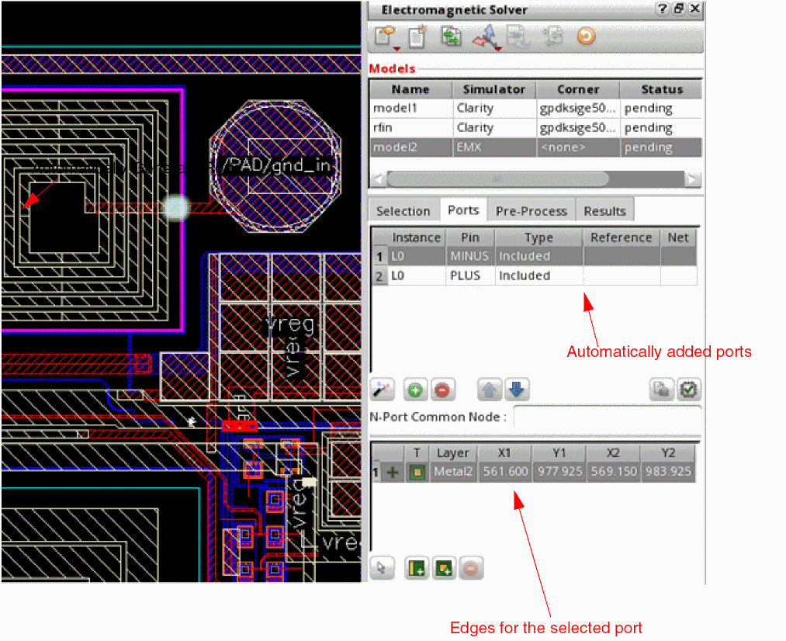
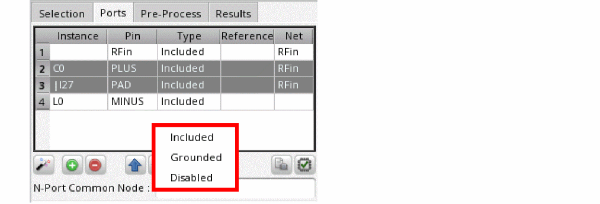

Specifying Ports for EMX Models in IC Layouts
For the models that use EMX simulator, you can begin port creation with the automatic port generation feature to create ports for the selected objects. After that, you can modify the ports created by the tool or manually add more ports.
-
In the Ports tab, click Automatically Generate Ports to generate ports for the instances selected on the Selection tab.
The tool uses certain rules to automatically identify pins and creates ports and displays the port details in the ports table. The table below the ports table shows the edges created for each port, as shown below.
 -
To create a new port, click Add Port (
 ) in the Ports tab.
) in the Ports tab.
A new row is added in the ports table. - In the Instance column of the new row, specify the name of an instance to which the port is connected.
- In the Pin column, specify the name of the terminal to which the port is connected.
-
In the Type column, choose a port type from the drop-down list. A different list of port types is shown for each simulator.
For models using EMX, you can set a common port type for multiple ports. Select the rows for multiple ports, right-click, and choose Set Port Type. A list showing the available port types is displayed at the pointer location. Choose a port type to be used. The selected port type is set for the selected rows.
 -
(For EMX models only) In the Reference column, specify the name of the port to be used as the reference for this port. The port is assigned as the
Disabledport type automatically.
To set a common reference port for multiple ports, select the rows for those ports, right-click, and choose Set Reference Port. In the form that is displayed, specify the name of the pin and click OK. - Similarly, you can add more ports.
-
Specify a net name in the N-Port Common Node field. The reference pin of the N-port instance in the schematic is connected to this net. If not specified, this field uses the first ground net found in the model.
While working with the ports, you can use the following commands in the Ports tab:
- Remove Port ( ): Removes the selected port. To remove all ports, right-click any row, choose Select All, and then use this command.
- Up and down arrows ( ): Move the selected ports up or down. Use these commands to keep the ports of interest in focus.
Related Topics
Return to top